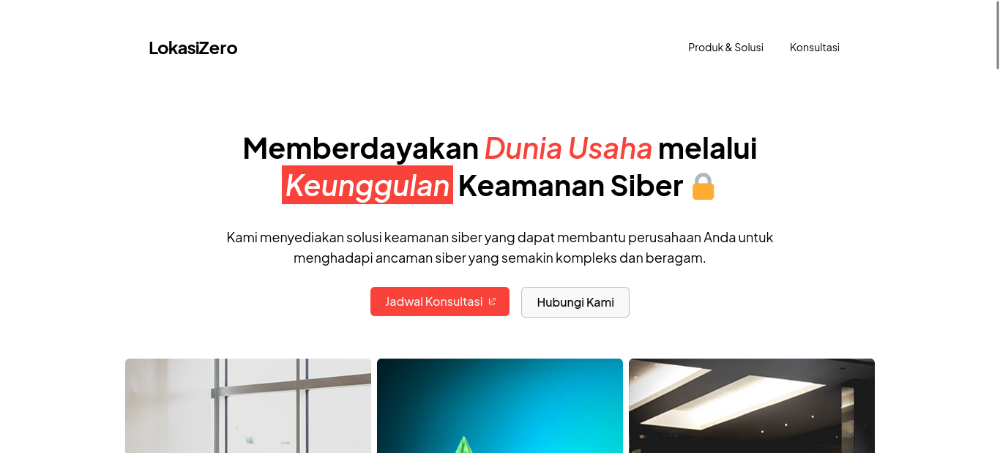

LokasiZero
LokasiZero adalah website landing page yang menampilkan informasi mengenai perusahaan cybersecurity fiktif bernama LokasiZero. Website ini adalah submisi untuk kompetisi pembuatan website landing page yang digelar GDSC X HIMATIKA Universitas Mulia.
LokasiZero dikembangkan dan dibangun menggunakan stack standar website yaitu HTML, CSS, JS.
Kode sumber tersedia di
GitHub.
Website bisa di akses di
sini.
